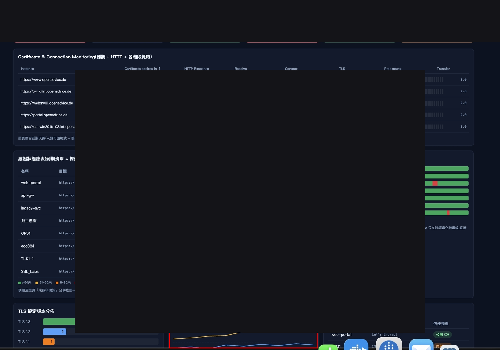
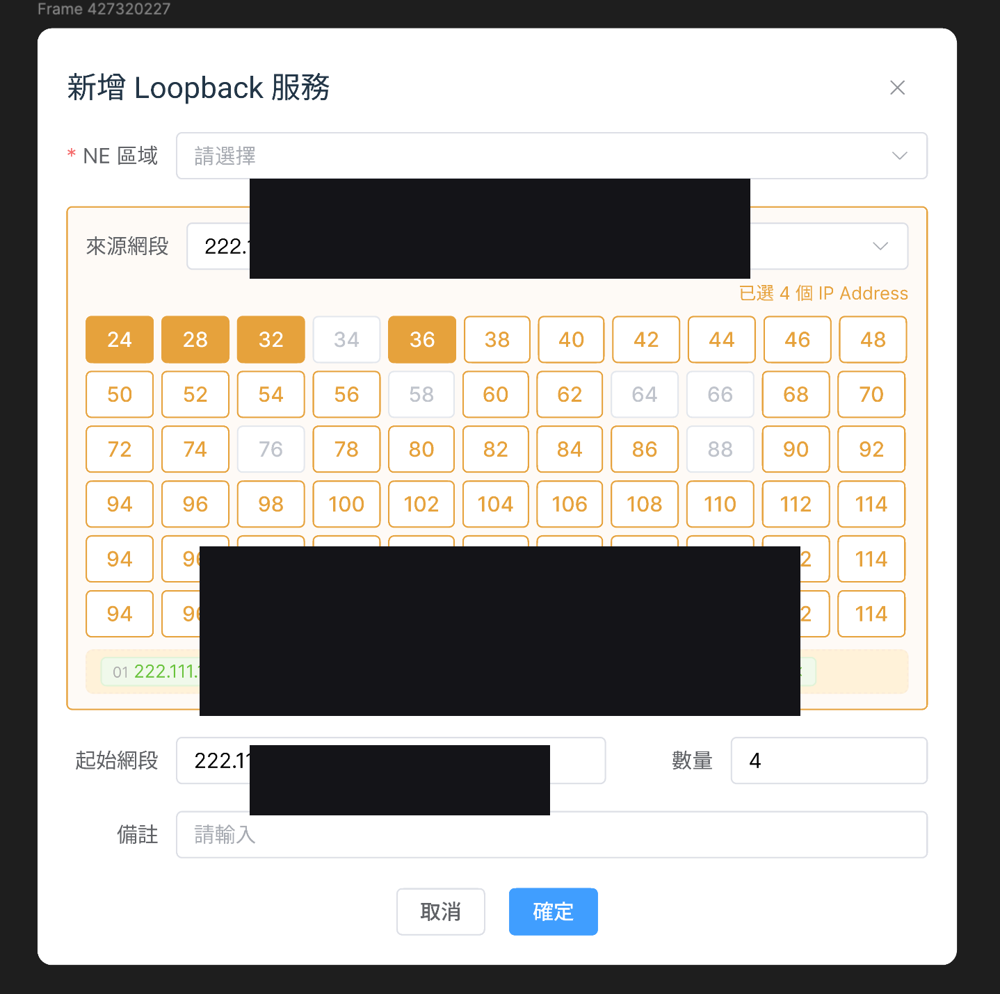
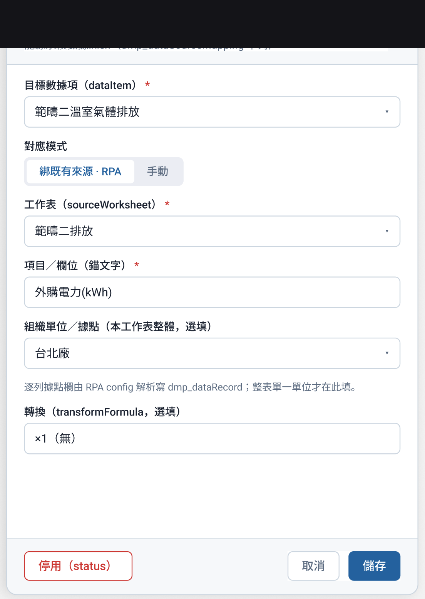

探討 Vibe Coding 讓 AI 快速產出可操作 UI 的價值與風險：當 Prototype 被當成 Design Spec，體驗與一致性會被鎖死；提出以 Design System／Token／規範驅動 AI，UIUX 轉為規則制定者與 UX Reviewer。
問題
AI 很快做出「看起來能用」的畫面後，PM／RD 容易把 Prototype 當最終規格，UI/UX 對資訊架構、空狀態、權限、RWD、系統一致性的把關空間被壓縮。
解法
保留 Vibe Coding 的速度優勢，但改為：先建 Design System 與 Token → 透過 MCP/Skills 讓 AI 讀規則 → 訂 Vibe Coding 規範 → AI 生成 → RD 驗證 → UIUX 做 UX Review。
成果摘要
定義新協作模型：UIUX 交付物從「每頁畫面」變為「可執行的設計規則」+「使用者角度驗收」
深入說明
什麼是 Vibe Coding
用自然語言描述需求，AI 產生／修改程式與介面，再透過 Prompt→修改→執行快速迭代，形成像產品的 Prototype。
衝突點
PM 看重可執行性與完成感；UI/UX 看重可用性、一致性、完整性。Prototype 定型後修改成本上升。
新模式：規則先行
Design System → MCP/Skills → Vibe Coding 規範 → AI Coding → RD 驗證 → UX Review。
範例觀察（已去識別）
簡報含 Design Token 驅動主題預覽、以及監控類 dashboard 改良對照，用以說明 AI 產出需再經體驗把關。
成果
- 定義新協作模型：UIUX 交付物從「每頁畫面」變為「可執行的設計規則」+「使用者角度驗收」
- 新舊模式對照表：一致性改由系統保證，成本從反覆重畫轉為一次性規則建置
- 指出風險：規則不完整時，AI 會「一致地錯」
精選畫面



